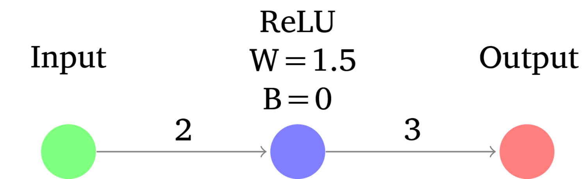
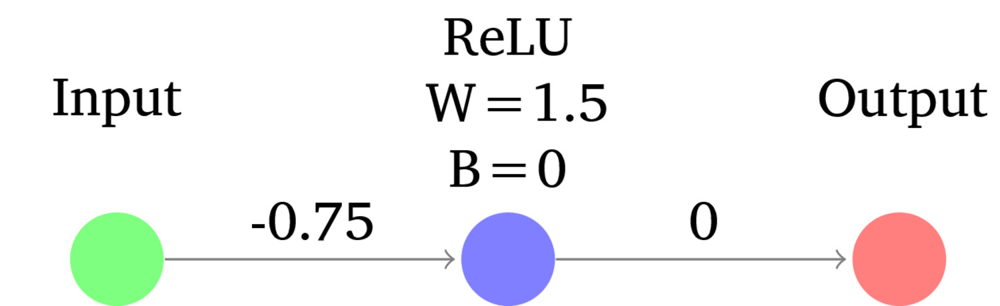
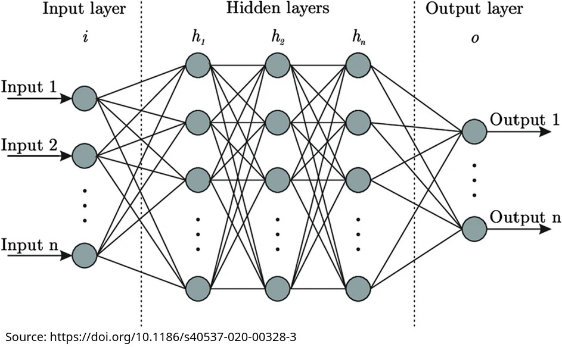
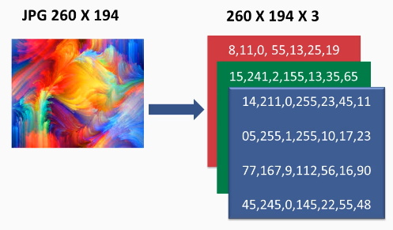

For better or worse, there is exactly one kind of model that wins speech processing now
So, uh, yeah. Guess we better cover that.
Neural Networks
What is a Deep Neural Network (DNN)?
Training Deep Neural Networks
Neural Inputs and Outputs
End-to-End Learning
“Hey, computer, here are things you should care about, lovingly isolated”
“Look at these features and find the patterns based on these labels”
“Then, when I give you a new set of curated measurements, tell me what label fits”
Identify features which are helpful
Find the features
Measure them
Store them, with labeled data, and only then, classify
What if we could just feed in the data, and make the system figure out the features itself?
Then just insert data directly, and get back answers?
That would be world changing!
Brains are not actually involved
They are not ‘modeling the brain’ any more than submarines are ‘modeling fish’
The goal here is not to make fake brains, it’s to make good decisions!
“We’re going to feed the input into a network of simple functions, and with the right network design and parameters, we should get a complex decision”
This depends on one core concept…
This is a tiny computational model of how a neuron (sorta kinda) works
Neurons take in a signal, and if they ‘activate’ or ‘fire’, output a modified version of the input signal
Every neuron has an activation function, weights for outgoing connections, and a bias
The activation function describes the mathematical relationship between the input and the output
Examples are Sigmoid, Tanh, Softmax, Linear
ReLu (‘Rectified Linear Unit’) is the most common: “If the input is less than zero, do nothing, otherwise, pass it through”
Weights modify the magnitude of the output signal to another neuron
The output of a neuron is the input times the weight plus the bias
Negative weights make the output signal smaller
Positive weights make the output signal larger
Every individual connection gets a weight
Biases modify the threshold for the neuron to activate
Higher bias means a neuron needs higher activation to fire
Lower bias means a neuron needs less activation to fire
Every individual Neuron gets a bias
Activates based on activation function
Outputs based on the weight and bias to each subsequent neuron
Changes to the weight and bias change the output of a neuron!


Output = Weight*Input + Bias is a lot like y=mx+b
Very basic arrangements of neurons can accomplish tasks
… but there are classes of problems a single neuron can’t cover

For now, let’s focus on…
Sigmoid: Give a single probability between zero and one
Inputs are put into the network
The inputs are passed through the entire network, with each neuron and connection contributing to the final output value at the output function
The output layer, with the right output functions, should show the correct answer
Common multi-input-to-Sigmoid tasks:
“Given these 15 sensor readings, should I report a car crash?”
“Given all these risk and protective factors, should this person be released on bail?”
“Given the pixels in this image, is the image likely to be pornographic?”
The architecture of the model matters, but that’s not the expensive and important part
The right set of weights and biases will yield correct results
The wrong set of weights and biases in exactly the same network shape will yield gibberish and garbage
Sharing “the model” is sharing these correct weights
… but how do we find them?
Initialization: Set up the weights and bias matrices with reasonable values
Forward Pass: What is the NN’s current ‘decision’ based on the input?
Loss Calculation: What does the output look like relative to the desired output?
Backpropagation: Let’s tweak the biases and weights to try and get closer to the desired output
Every parameter (e.g. Weight and bias) needs to start with some value
There’s a lot of study on this, but the answer turns out to be “Randomish numbers, not too small, not too large”
A loss function tells the model how to evaluate the difference between the desired, actual output and the predicted output
Many functions are possible, and each task will have preferred loss functions
This is important, because it tells the model what it needs to get right!
Mean Squared Error: Penalize based on the average squared difference between the predicted and actual values
Mean Absolute Error: Penalize based on the average absolute difference between the predicted and actual values
Cross-Entropy Loss: For probability outputs, penalize more heavily as the predicted probability diverges from the ‘correct’ answer
Dice Coefficient: How much do the predicted pixels overlap with the actual pixels?
“Let’s update the biases of each neuron and connection weights in the network by looking at the partial derivative of each with respect to the loss function”
There’s a slope of movement which leads towards less loss, go that way!
This also determines how much a given weight “matters”
The amount of modification is controlled by the ‘Learning Rate’
This is an optimization problem!
Forward pass, Loss, Backpropagation and Update, then Forward Pass, Loss, Backprop…
You process batches of data at a time
When you’ve trained on the entire dataset, and loop back around, you’ve completed an epoch
This can take a while!
“Keep guessing, and tweaking, and guessing, and tweaking”
Eventually, you’ll arrive at a local minimum
“Well, there’s no direction I can go which makes the loss any less!”
This may or may not be the true minimum, but that’s another lecture!
The final parameters (e.g. Weights and Biases) are then ready to use!
You take a pre-trained model, and give it a smaller amount of new representative data
Repeat the learning process with smaller learning rates and focus on deeper layers
This is great for adapting a general model to a more specific task or new domain
Artificial Neurons turn inputs into outputs according to function and bias, and output according to weights
Deep Neural Networks allow more complex decision making
Training involves doing inference, finding error, assigning that error to individual weights/biases, and updating parameters
Inference is just putting the input in, and observing the outputs
… but what are the possible inputs and outputs?
‘Tokenize’ the text, storing each possible text item as an entry in the Tokenizer’s dictionary
Then, give the input as a series of numbers, corresponding to tokens in that dictionary
Sentences are strings of numbers representing tokens

Linear: Just give me the last layer’s summed output
Tanh: Turn the last layer’s output into a prediction between -1 and 1
Sigmoid: Give a single probability between zero and one
Softmax: Please choose among possible output classes, giving probabilities for each that add to one
Multiple Output Functions: You don’t have to use the same function for every output neuron!
Deep Learning doesn’t require feature engineering
You can go straight from raw data to your final decision
DNNs allow intermediate representations and features which work to emerge
Smart architectures can amplify this effect
Features just happen, and then get used for classification
Inputs map to outputs, in an emergent way
We don’t actually understand what features they’re using to make decisions
Nope.
We as a species have no idea how these things do what they do.
Why would we put up with that?!
… and is there just one kind of Deep Neural Network?
Next time!
Artificial Neurons turn inputs into outputs according to function and bias, and output according to weights, and can combine into deep networks
Training involves doing inference, finding error, assigning that error to individual weights/biases, and updating parameters
You can use a variety of input and output data types
Neural networks generate their own features and find their own patterns in the data